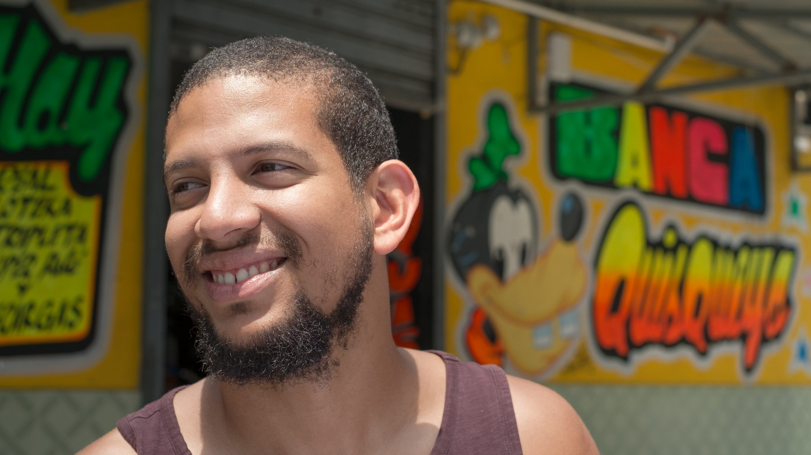

About me

Hi there, my name is Alberto Vargas. I strongly identify myself with where I am from-- the Dominican Republic. I value resourcefulness, empathy, and reciprocity. I am a recent grad from the Master's of Science in Nutrition program at UNC-Chapel Hill. Now, I research maternal and child nutrition for the UNC School of Medicine while hustling to co-run a nutrition research consultancy in Santo Domingo.
I am a Full-Stack Web Developer in the making at the Coding Boot Camp at UNC - but also a good cook, a drummer (and percussionist), and a Spanish and French tutor in the Chapel Hill-Carrboro area.